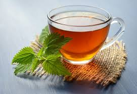

if you like sodas but are trying to limit it this website is for you!
in this website i will tell you some of the replacements for sodas
quit your habits and dive right in!
smoothies are a really good replacement for carbonated drinks as it has a lot of vitamins like vitamin C,A,K,B and E
as healthy as it may sound it still contains a lot off sugar so dont drink too much
other than that its a really good drink which is both satisfying and healthy, and best of all there are a lot of varieties
sparkling water is a carbonated version of water which has a satisfying taste.
it is also healthy and improves digestion.
water is a essentialdrink for humans
many people forget to drink water and drink lesser than reccomended liters
due to it having no taste people dont get satisfied drinking it
flavored water is same as water but has variety of flavors which makes it have a great taste
a great hot drink with bunch of health benefits
it can be enjoyed both hot and cold each with unique taste.
there are a lot of teas you can enjoy like: herbal,black,fruit and etc
all of are packed with antidoxidants and health benefits.
apart from curing cold it also cures addiction!

coconut water although expensive is a refresihing water from coconuts
it is healthy and fresh drink with good taste
kompot is a drink made from boiled fruits
its is enjoyed in eastern europe and caucasia
it has a sweet taste considering a fact that its made from fruits
there are a lot of different kompots each with their pleasant taste
kompots made from fruits and has no proccesed sugar
which means that its healthy
milk is high calcium drink which comes froma cow or a goat
people drink it warm and cold its up to prefrece but warm milk can be drank while having a sore throat
there is also a lot of varieties like:almond,chcolate,strawberry,vanila and etc
there is no other drink with such benefits!
you are always told to stay away from sodas but why? well there are a lot of reasons
its unhealthy. drinking too much can lead to obesity,bad teeth,unstoppable addiction,bad for liver,heart and bones
it also has a very high ammounts of sugar, its all written on the bottle
its crucial to care for your health. and the first step to take is to quit bad habits.